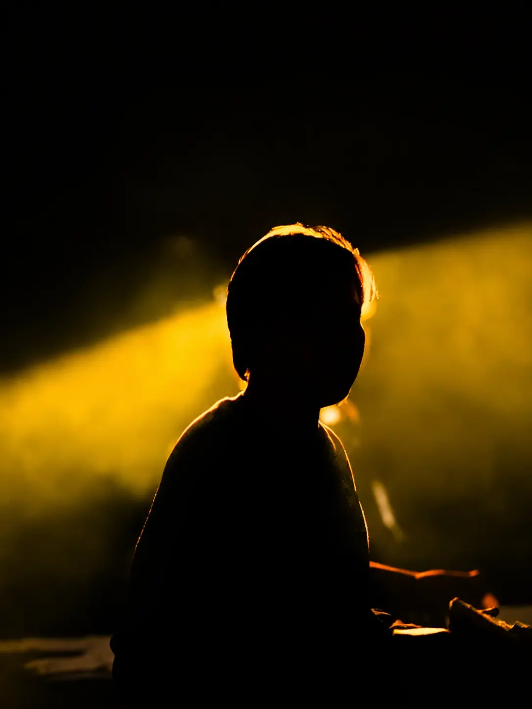
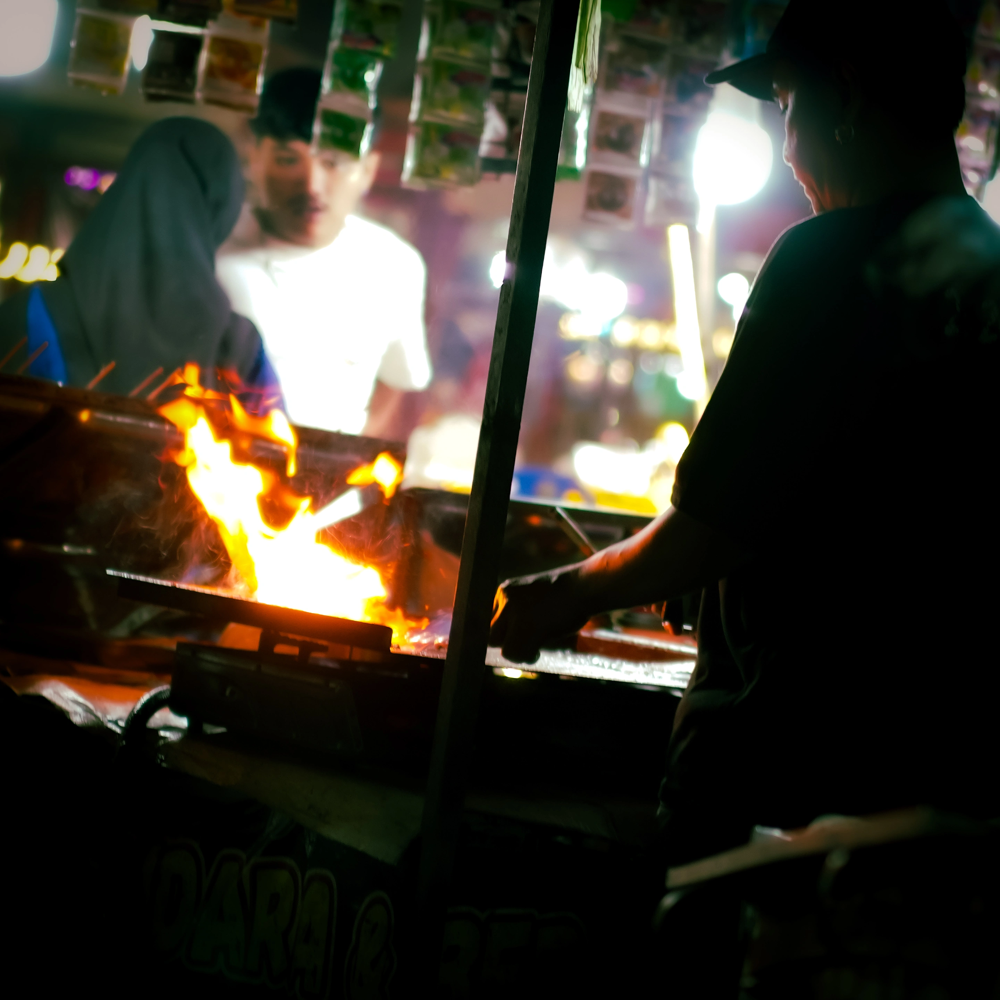

Tentang Saya
Seni bertemu teknologi.
Saya adalah kreator visual berbasis di Yogyakarta dengan passion mendalam pada dunia fotografi, sinematografi, dan pengembangan digital. Setiap frame adalah sebuah keputusan, setiap edit adalah sebuah narasi.
Sebagai anak daerah, lingkungan bukanlah sebagai penghambat saya mengenal dunia seni dan teknologi, sebab seni dan teknologi tidak mengenal batasan geografis. Saya percaya bahwa setiap proyek adalah kesempatan untuk menceritakan kisah yang unik dan menghadirkan kualitas, kreativitas, dan profesionalisme.
Nama
Muhammad Anas Nashirudin
Lokasi
Yogyakarta
Pendidikan
PDF Ulya Fadlun Minalloh
Pengalaman
3+ Tahun Aktif
Email
anasaan2008@gmail.com
WhatsApp
+62 813-8959-0273